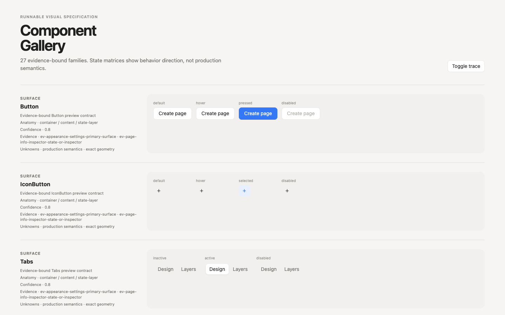
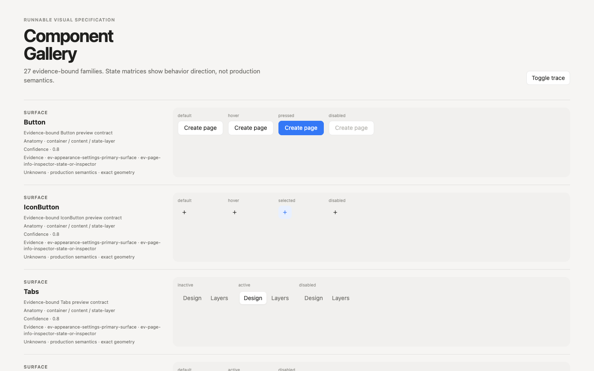

R-004 · bounded visual evidence
Component Gallery density correction
1440×900 · no pixel score
Before

After

Renderer-layer correction: 18px row padding · 72px stage minimum · 12px stage padding. Tokens, inventory and provenance preserved.